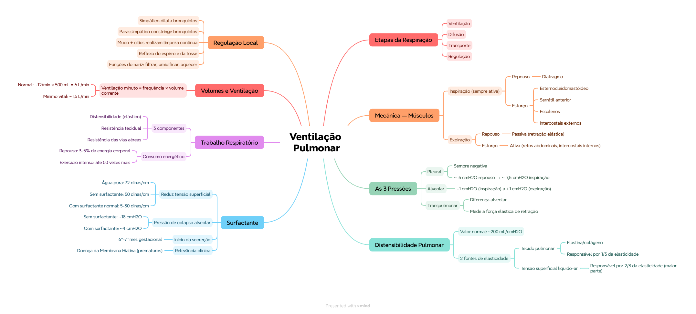

🎯 O que você vai conseguir fazer depois desse capítulo
Descrever os músculos inspiratórios e expiratórios, em repouso e em atividade física
Explicar as pressões pleural, alveolar e transpulmonar, com valores numéricos
Definir distensibilidade pulmonar e as 2 forças elásticas que a determinam
Explicar o papel do surfactante na tensão superficial alveolar
Diferenciar os 3 componentes do trabalho da inspiração
Calcular ventilação minuto e ventilação alveolar
🌬️ As 4 etapas da respiração
As funções principais da respiração são fornecer O₂ aos tecidos e retirar CO₂. Isso acontece em 4 etapas sequenciais:
Ventilação — inspiração e expiração
Difusão — troca de O₂/CO₂ entre alvéolo e sangue
Transporte — O₂/CO₂ carregados pelo sangue
Regulação — controle nervoso/químico de todo o processo
💡 Esse capítulo cobre a etapa 1 (ventilação) em detalhe — as etapas 2, 3 e 4 são os próximos capítulos da P1 (Cap. 39-41).
💪 Mecânica da ventilação — músculos
Os pulmões se expandem/contraem de 2 formas: (1) movimento do diafragma pra cima/baixo, e (2) elevação/descida das costelas (aumenta/reduz o diâmetro anteroposterior do tórax — até 20% maior na inspiração máxima que na expiração).
📌 O que o professor cobra nesta seção: quais músculos são inspiratórios x expiratórios, e como isso muda entre repouso e atividade física — apareceu explicitamente como pergunta de revisão no material.
🏥 Tempo normal em repouso: inspiração ~2s, expiração ~2-3s. Na atividade física, esses valores variam bastante.
📉 As 3 pressões da ventilação
Pressão
Valor normal
Comportamento
Pleural
~ -5 cmH₂O em repouso → ~ -7,5 cmH₂O na inspiração
Nunca deve ser positiva — é a "sucção" que mantém o pulmão expandido
Alveolar
~ -1 cmH₂O na inspiração → ~ +1 cmH₂O na expiração
Pequena, mas suficiente pra mover 0,5L de ar em 2-3s
Transpulmonar
Diferença entre alveolar e pleural
Mede a força elástica de retração do pulmão (a "pressão de recolhimento")
🟢 Regra de ouro: a pressão pleural NUNCA fica positiva em condições normais — se ficasse, o pulmão colapsaria. Ela é sempre negativa (sucção), só varia em magnitude.
🎈 Distensibilidade pulmonar
É o volume que o pulmão se expande por cada unidade de aumento da pressão transpulmonar. Valor normal: ~200 mL de ar por cada 1 cmH₂O de pressão transpulmonar (após 10-20s de equilíbrio).
As forças elásticas que determinam a distensibilidade vêm de 2 fontes:
Tecido pulmonar em si (fibras de elastina e colágeno) — representa só ~1/3 da elasticidade total
Tensão superficial líquido-ar dos alvéolos — representa ~2/3 da elasticidade total (a maior parte!)
💭 Contraintuitivo pra muita gente: a MAIOR parte da "elasticidade" do pulmão não vem do tecido em si, vem da física da tensão superficial do líquido que reveste os alvéolos.
🧴 Surfactante — o "detergente" que salva o pulmão
Tensão superficial de referência: água pura = 72 dinas/cm. Líquido alveolar SEM surfactante = 50 dinas/cm. Líquido alveolar COM surfactante normal = 5-30 dinas/cm (redução drástica!).
Num alvéolo médio (raio ~100 µm) com surfactante normal, a pressão de colapso calculada é de ~4 cmH₂O. Sem surfactante (só água), seria ~18 cmH₂O — 4,5x maior. É essa redução que impede o colapso alveolar.
🏥 O surfactante só começa a ser secretado entre o 6º e 7º mês de gestação (às vezes mais tarde) — por isso prematuros extremos têm risco de Síndrome de Dificuldade Respiratória do Recém-Nascido (Doença da Membrana Hialina): sem surfactante suficiente, a tensão superficial fica alta demais, os alvéolos colapsam, e o trabalho respiratório se torna exaustivo.
⚙️ Trabalho da inspiração — 3 componentes
Trabalho de distensibilidade (elástico) — vencer as forças elásticas do pulmão e do tórax
Trabalho de resistência tecidual — vencer a viscosidade das estruturas do pulmão/parede torácica
Trabalho de resistência das vias aéreas — vencer a resistência do fluxo de ar
Em repiração tranquila, a ventilação consome só 3-5% da energia corporal total. No exercício intenso, pode aumentar até 50x — especialmente se já houver aumento de resistência das vias aéreas ou redução de distensibilidade.
📊 Volumes, capacidades e ventilação
Medidos por espirometria (registro do volume de ar que entra/sai dos pulmões).
💡 Ventilação minuto = frequência respiratória × volume corrente. Com volume corrente normal (~500 mL) e frequência normal (~12/min): ventilação minuto ≈ 6 L/min. Uma pessoa consegue sobreviver por um curto período com apenas 1,5 L/min (2-4 respirações/min) — o mínimo vital.
✅ O que você deve lembrar
Pressão pleural NUNCA é positiva. Surfactante reduz tensão superficial de ~50 pra 5-30 dinas/cm. 2/3 da elasticidade pulmonar vem da tensão superficial, não do tecido.
⚠️ Erro comum
Achar que a expiração é sempre passiva — em repouso é, mas na atividade física ela se torna ATIVA (retos abdominais + intercostais internos).
⚡ Questão rápida
Durante a inspiração, o que acontece com a contração do diafragma em relação à pressão intrapleural?
A contração do diafragma diminui a pressão intrapleural (fica mais negativa), gerando o gradiente de pressão negativo que puxa o ar pra dentro dos pulmões.
🧠 Autoexplicação
Por que faz sentido que 2/3 da elasticidade pulmonar venham da tensão superficial (não do tecido), e por que isso torna o surfactante tão crítico?
Se a maior parte da força que tende a colapsar o pulmão vem da tensão superficial do líquido alveolar (não do tecido elástico em si), então qualquer coisa que module essa tensão superficial vai ter um efeito desproporcionalmente grande sobre o quão fácil ou difícil é manter os alvéolos abertos. O surfactante reduz a tensão superficial em até 10x (de ~50 para 5-30 dinas/cm) — como essa componente já é a maior fatia da elasticidade total, essa redução tem um impacto enorme na pressão necessária pra manter o alvéolo aberto (de ~18 cmH2O sem surfactante pra ~4 cmH2O com surfactante, uma diferença de 4,5x). Se a elasticidade fosse majoritariamente do tecido (não da tensão superficial), a ausência de surfactante teria um impacto muito menor — é justamente porque a tensão superficial domina que a falta de surfactante (como em prematuros) é tão gravemente incompatível com a respiração normal.
🫧 Regulação local e proteção das vias aéreas
Controle nervoso da musculatura brônquica: simpático dilata os bronquíolos; parassimpático constringe
Muco + cílios limpam as vias aéreas continuamente
Reflexo do espirro e reflexo da tosse — mecanismos protetores reflexos das vias aéreas
Funções respiratórias do nariz: filtrar, umidificar e aquecer o ar
⚠️ Onde todo mundo escorrega
Achar que a expiração é sempre passiva — só em repouso; na atividade física é ativa
Trocar os valores de pressão pleural (repouso ~-5, inspiração ~-7,5) e alveolar (-1 na inspiração, +1 na expiração)
Esquecer que a pressão pleural NUNCA é positiva — se fosse, o pulmão colapsaria
Achar que a maior parte da elasticidade pulmonar vem do tecido — na verdade vem da tensão superficial (2/3)
Confundir os 3 tipos de trabalho respiratório (elástico, resistência tecidual, resistência das vias aéreas)
📚 Se você só puder lembrar de 6 coisas
4 etapas da respiração: ventilação, difusão, transporte, regulação
Inspiração sempre ativa (diafragma ± acessórios); expiração passiva em repouso, ativa no exercício
Pressão pleural sempre negativa (~-5 a -7,5 cmH2O); pressão alveolar oscila entre -1 e +1
Distensibilidade pulmonar normal: ~200 mL/cmH2O
Surfactante reduz tensão superficial de ~50 para 5-30 dinas/cm — crítico contra colapso alveolar
🩺 Caso Clínico Progressivo — Prematuro com Desconforto Respiratório
Vamos acompanhar o recém-nascido Théo, prematuro de 29 semanas, na UTI neonatal. O caso evolui em 3 níveis — clica em cada um pra ver como as coisas vão se desenrolando.
🧠 Mapa Mental — Ventilação Pulmonar
Visão geral do capítulo em formato visual — ideal pra revisão rápida antes da prova. O conteúdo completo, com explicações e exemplos, está no Guia de Estudo.

🃏 Flashcards — SM-2 real + interface Anki
O sistema guarda, no seu navegador, quais cards você já sabe bem e quais precisam voltar mais cedo — cada vez que você avalia um card, ele recalcula quando ele deve voltar.
Cartão 1 / 0Dominados: 0
PERGUNTA
RESPOSTA
✅ Banco de Questões Comentadas
10 questões, do mais básico ao mais puxado. Escolhe uma alternativa, depois clica em "Ver comentário completo" — vale a pena ler até quando você acerta, porque o comentário explica cada alternativa, não só a certa.